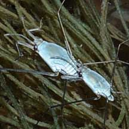
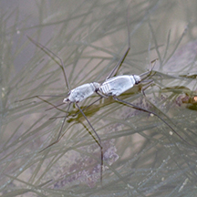
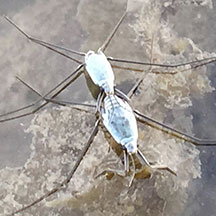

|
|
| arthropods text index | photo index |
| Phylum Arthropoda > Class Insecta |
| Sea skaters updated Jan 2020 Where seen? These tiny insects 'walk' on the water surface and are also called water striders or coral bugs. They belong to the Order Hemiptera (true bugs) and are among the few true insects that live in the sea. Most species live along the coast but a few species live totally out in the open ocean, not coming to shore. Features: Body less than 1cm long. The insect is covered with elaborate layers of microscopic hairs that traps air. Thus if the insect is splashed or dunked in water, it has a kind of 'life vest' of air so it bobs up to the water surface unharmed. The insect can 'walk' on water because the long legs redistribute its body weight and the hairs on the legs repels water so the insect does not break the water surface tension. In fact, besides skimming on the water, the insect can jump off the water surface too! The short front legs are used to capture and hold prey, or to grasp the female during mating. The long middle legs are used like oars, while the last long legs are used to steer. Skater snacks: Sea skaters may feed on land insects that have fallen or washed to sea. They have piercing mouthparts to inject digestive substances. The liquified prey is then sucked up. Baby skaters: Coastal skaters lay their eggs on hard surfaces near the low water mark. Oceanic skaters lay theirs on floating stuff. The nymph that emerges from the eggs look somewhat like the adult. Sea skaters recorded in Singapore include Halovelia sp. (Family Veliidae) and Halobates sp. (Family Gerridae). Thanks to Tay Ywee Chieh and Lanna Cheng for identifying some of the sea skaters seen as Halobates hayanus (bigger) and Mrs Yang Changman for identifying Haloveloides sundaensis (tiny). |
 A mating pair of Halobates hayanus Sisters Island, Aug 08 |
 A mating pair of Halobates hayanus Sisters Island, Jan 07 |
 Pulau Semakau (South), Jan 20 Photo shared by Joleen Chan on facebook. |
| Sea skaters on Singapore shores |
On wildsingapore
flickr
|
Acknowledgement
|